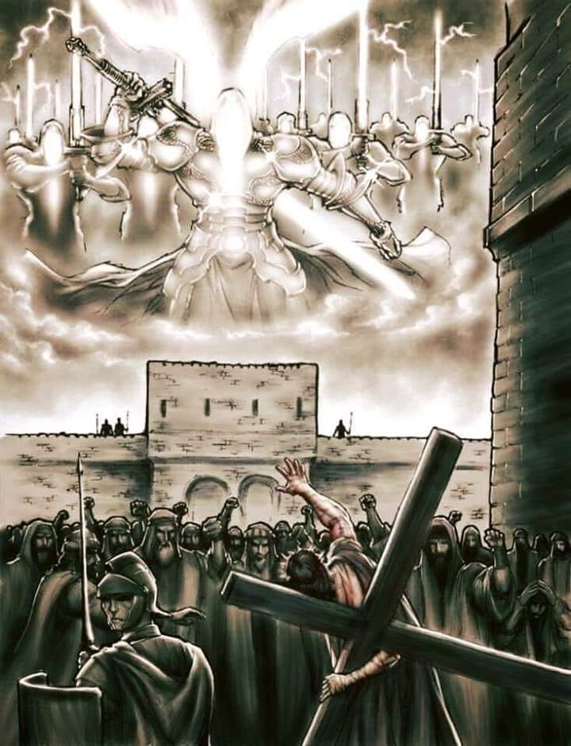

They came for Him with clubs and swords, as if arresting a criminal. Men who were dust tried to bind the One who formed them. In the dim light of Gethsemane, while the disciples panicked and fled, Jesus stood still. Not because He was caught. But because He allowed Himself to be. There was no struggle. T here was no resistance. Only the deliberate surrender of the Sovereign to the hands of sinful men.

But make no mistake, He was not powerless. He was not at their mercy. He was holding back mercy.
He said it with quiet authority, not as a threat but as a fact: “Do you think I cannot appeal to My Father, and He will at once send Me more than twelve legions of angels?” (Matthew 26:53)
That number is precise. A Roman legion held over six thousand soldiers. Twelve legions are more than seventy-two thousand. Christ could have summoned them instantly. Not even a word would need to be spoken. The will of the Son would have been enough.
One angel in Scripture (2 Kings 19) wiped out an army of 185,000 men in a single night without strain. [cf. One Angel. One Night. An Entire Army Gone.] Imagine what seventy thousand of them could do in a breath. Jerusalem would not have been left standing. Rome would have been erased from the map. The entire earth could have been emptied. Justice would have been served instantly. The rebellion of man crushed fully. The universe silenced forever.
But He stayed.
He let them bind Him. He let them strike Him. He let them spit in His face, the very face that once looked upon creation and called it good. He held the atoms of their hands together even as they slapped Him. He kept their lungs breathing while they mocked Him. He carried the cross they forced upon Him, not because He was obligated, but because He was fulfilling the will of the Father.
He let them bind Him. He let them strike Him. He let them spit in His face, the very face that once looked upon creation and called it good. He held the atoms of their hands together even as they slapped Him. He kept their lungs breathing while they mocked Him. He carried the cross they forced upon Him, not because He was obligated, but because He was fulfilling the will of the Father.
This was not surrender. This was supreme control.
If at any point He had willed it, history would have ended. But He didn’t come to end it. He came to redeem it. He endured the hate of men He could have silenced with a glance. He took the blows of soldiers whose lives He upheld with every passing second. He walked toward Golgotha with full knowledge that He was not being overpowered, He was offering Himself as a ransom.
We often look at the crucifixion and see only pain. But we forget what He withheld. We forget the judgment that did not fall on us because it fell on Him. We forget that it wasn’t nails that held Him to that cross, it was His will. And He kept that will locked in place while those He created mocked, cursed, and slaughtered Him.
This is not weakness. This is terrifying power restrained. This is mercy beyond comprehension.
He had every right to destroy. He would have been just to leave nothing behind. But He bore it instead. Every lash. Every insult. Every drop of sin that was not His. He drank the cup of wrath down to the dregs. Not because we deserved it. But because He chose to love those who hated Him.
This is what makes the gospel weighty. Not that Jesus died, but that He chose to die when He could have undone everything in less than a blink. The Son of God restrained divine vengeance so that grace could be poured out. And that restraint will not last forever.
He will return. And when He does, He will not come to be bound. He will not come to be questioned. He will not come to plead with men. He will come with justice. The armies of heaven will no longer be withheld. The King who was silent will speak. And when He speaks, there will be no arrest, no trial, no second cross.
Only judgment.
But today - right now - is still the day of mercy. Not because we earned it. But because the One who could have crushed us chose instead to bear our punishment.
We were spared, not because God was soft but because Christ was willing.
And that truth should silence every boast, crush every illusion of worth, and bring every knee to the ground.
He, who has ears to hear. let him hear.🙏